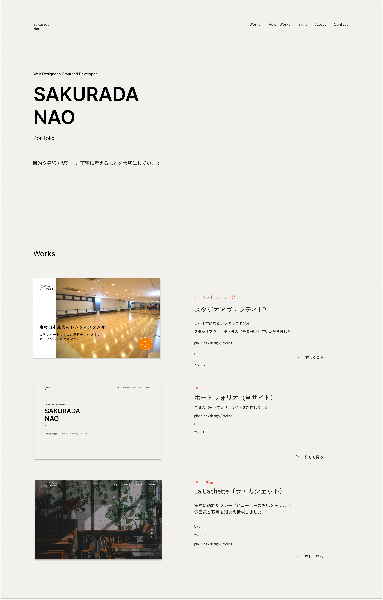
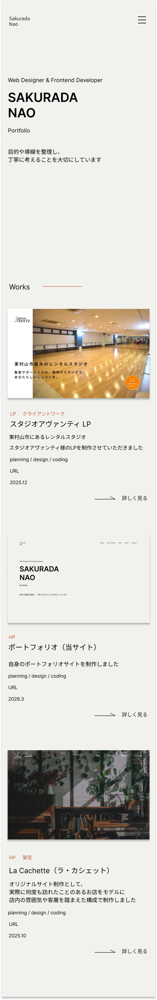
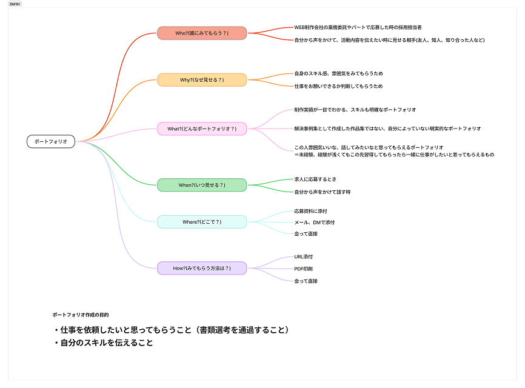
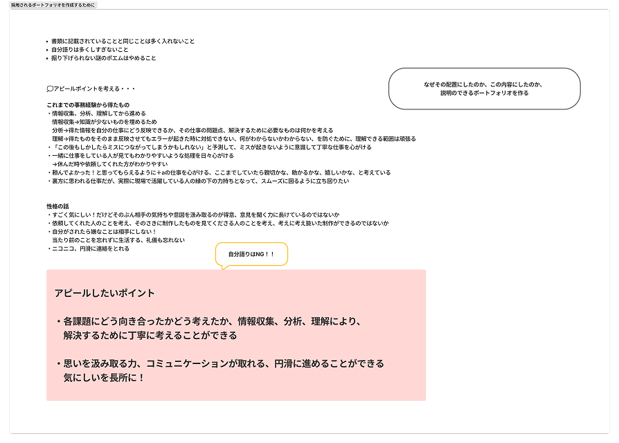
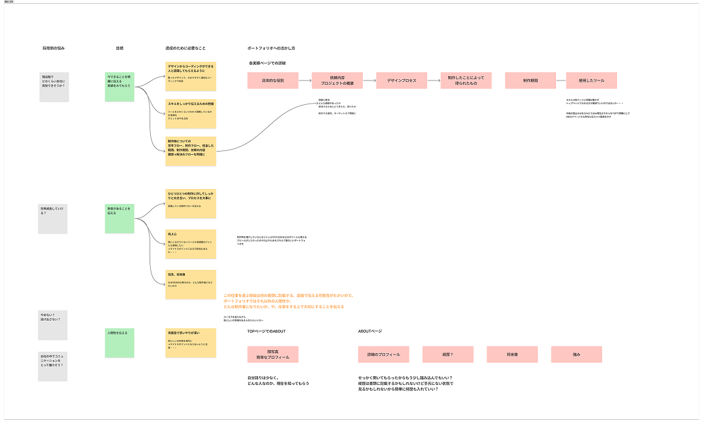
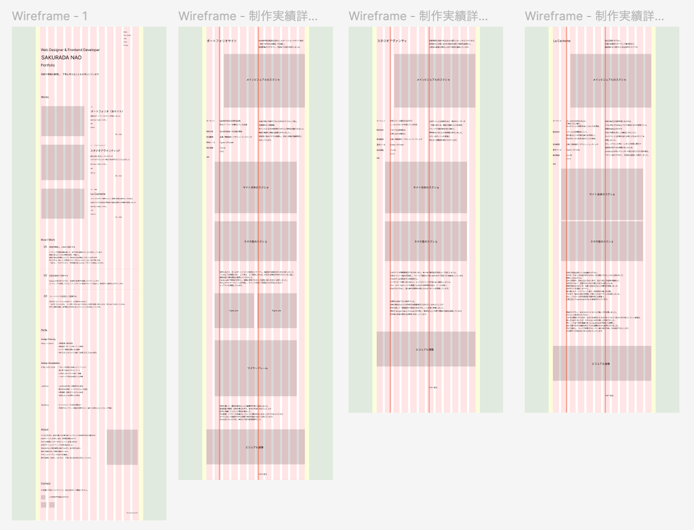
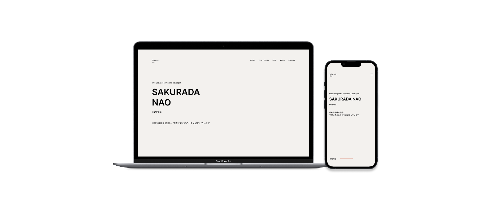

ポートフォリオ（当サイト）
Web制作案件獲得を目的としたポートフォリオサイト制作。
「設計力が伝わる構成」を意識し、
情報整理からデザイン・実装まで自身で制作しました。

- ターゲット
- Web制作会社の採用担当者
制作パートナーを検討している企業 - 制作目的
- Web制作会社への応募を想定
- 担当範囲
- 企画 / 情報設計 / デザイン / コーディング
- 使用ツール
- Figma / VS Code
- URL
- https://naosakurada.com
自身の強みや制作プロセスが伝わりづらいと感じ、
情報設計から再構築。
見てくださる方が短時間でスキルと思考を把握できるよう、 構成の整理と導線の最適化を行いました。
視認性と読みやすさを意識し、余白と情報の階層設計に
注力しています。
Site Design


Design Concept
制作にあたり、多くのポートフォリオ事例をリサーチし、構成順や情報の伝え方を分析しました。
「どのような課題に対し、どう考え、どう解決したのか」が伝わる構成が求められていると感じ、 掲載内容と優先順位を整理していきました。
Figma Jamで情報を可視化し、課題と解決プロセスが自然に追える流れへ設計しました。
その上でワイヤーフレームを作成し、グリッドを用いて整理された印象になるよう レイアウトを構築しています。




Learnings
制作を通して、構成を固めることの重要性を強く実感しました。
情報収集や整理、分析を重ねる中で、自分が本当に伝えたいことが
自然と明確になっていく感覚を得ました。
その結果、デザインや言葉ひとつひとつに理由を持たせることができるようになり、
説明ができる状態で制作を進められたと感じています。
その土台となったのが、事前の丁寧な情報整理でした。

Desktop / Mobile